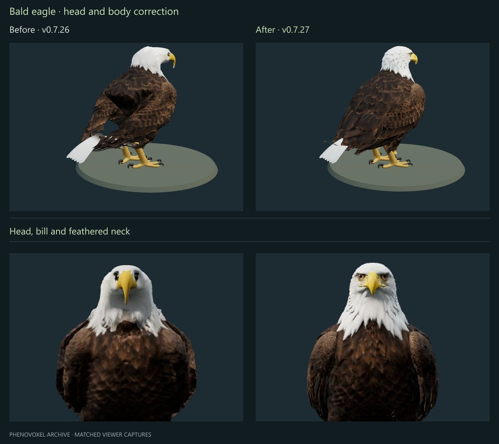

Bald eagle
Haliaeetus leucocephalus · Head and body correction · v0.7.27
Before and after

Rendered viewer captures with matching viewing directions. The lower row enlarges the head and breast.
Head, neck and torso
The earlier standing mesh supplies the head, hooked bill, feathered neck, chest and folded mantle. Its geometry and original feather pigment are registered to the shared skeleton. This replaces the previous body's stretched surface fit. Wing feathers seat beneath the folded mantle, and the shoulder surfaces overlap through movement. Grab3D standing reference, CC0 1.0.
Adult identification photographs guide the large head, long hooked bill, heavy body, white head and dark brown wing plumage. Individual feather patterns and body proportions vary. Cornell Lab of Ornithology identification reference.
One articulated exterior
The head and body, flight feathers, feet, talons and twelve-feather tail are permanent surfaces on one 23-joint skeleton. Standing, takeoff, flight and landing use the same meshes and material maps. Joint angles, timing and shape corrections are authored display values. Morphometric calibration and independent biomechanical validation are pending.
Reproduction and checks
Model metadata, source hashes and scientific status accompany the shared model. The authoring script and folded feather fitting use the pinned source assets. Run the authoring script with prepare, run the Python fitting script, then run the authoring script with pack. NumPy and SciPy support the fitting stage.
Automated checks compare every retained head and torso vertex against the registered standing reference. Additional checks cover file and texture hashes, the shared skeleton, deterministic controls, camera framing, both feet during ground contact and clearance through the two finite transitions.